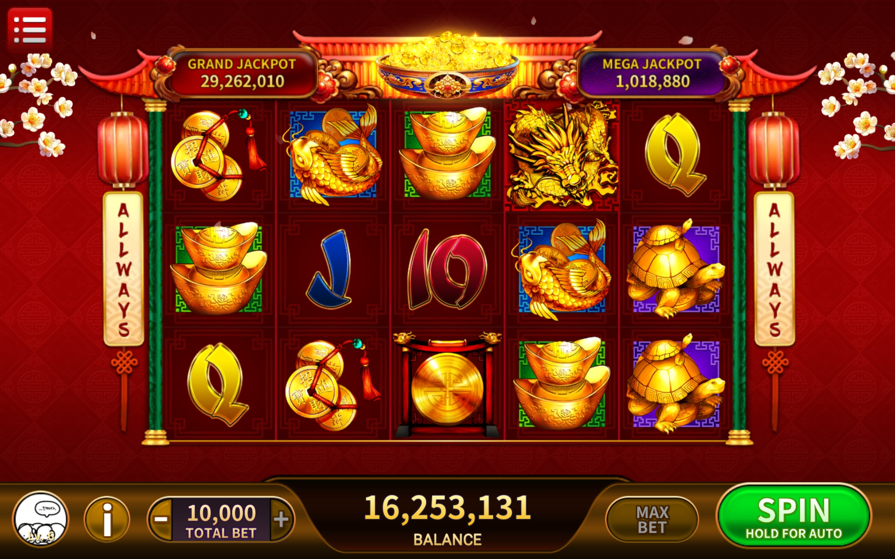
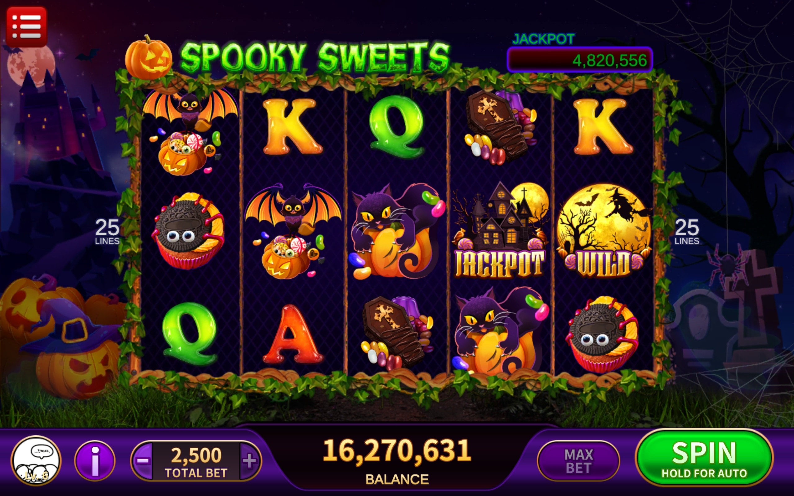
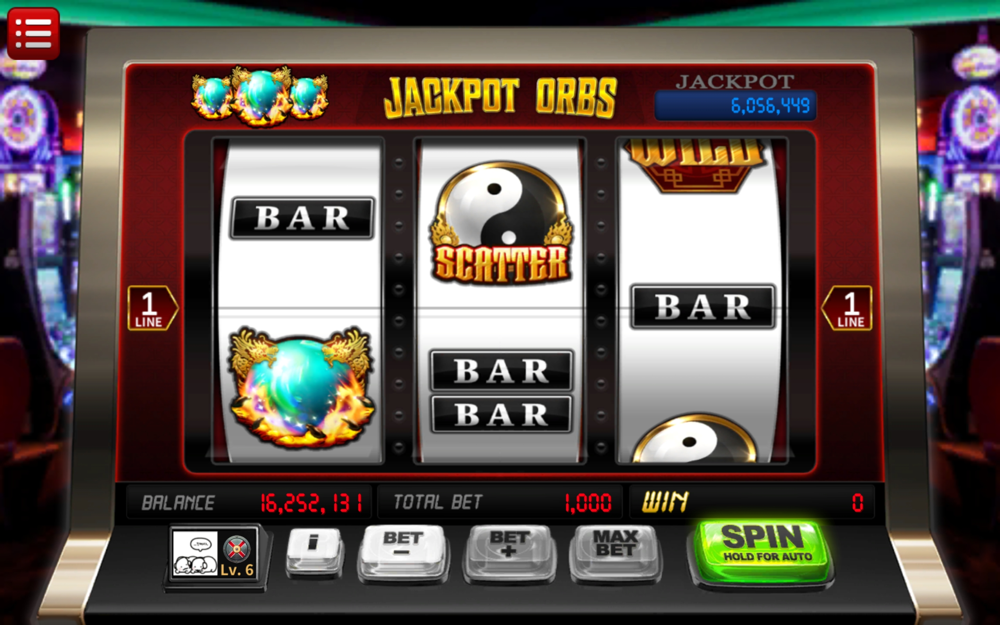
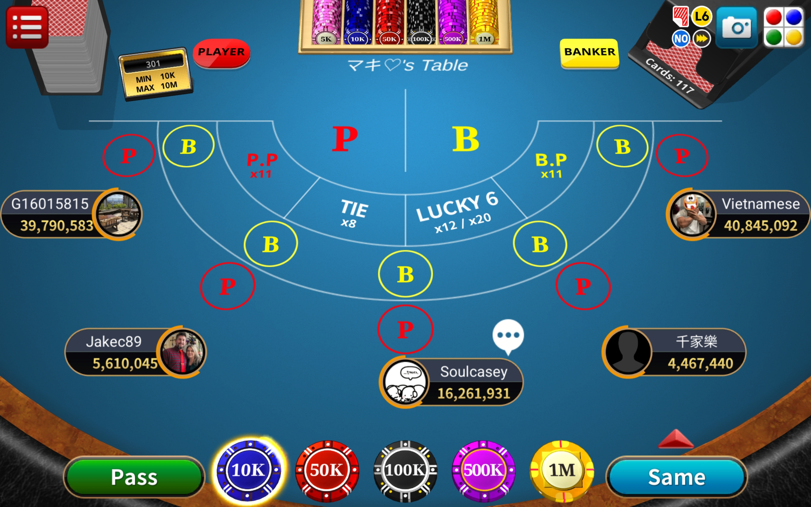
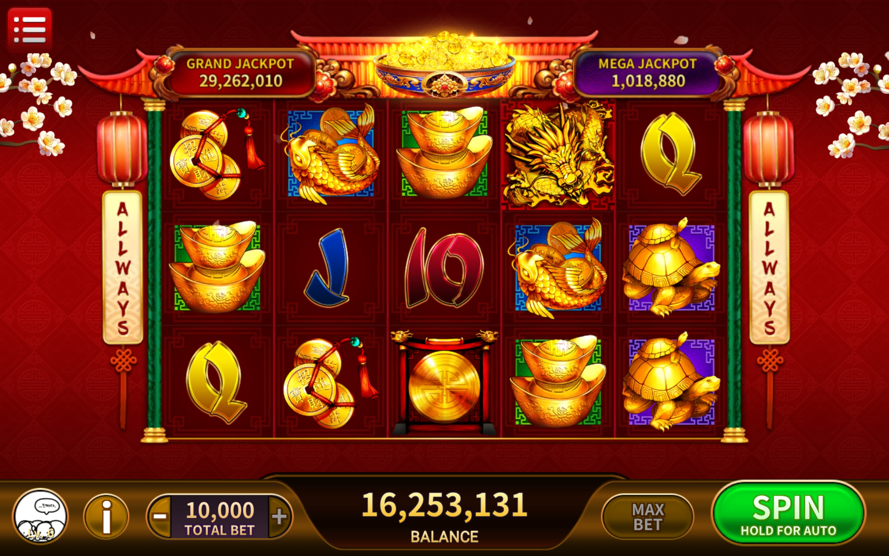
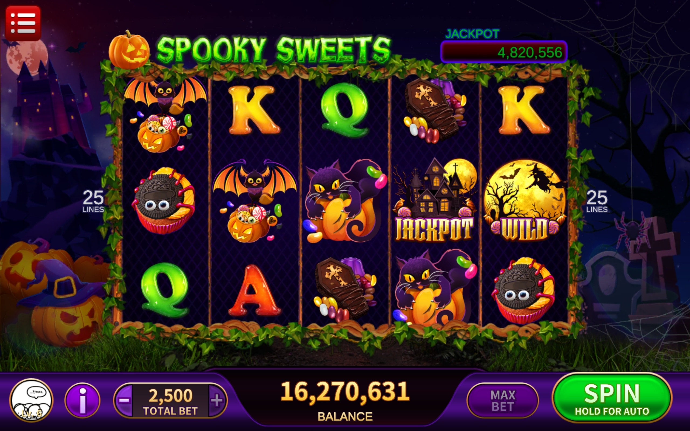
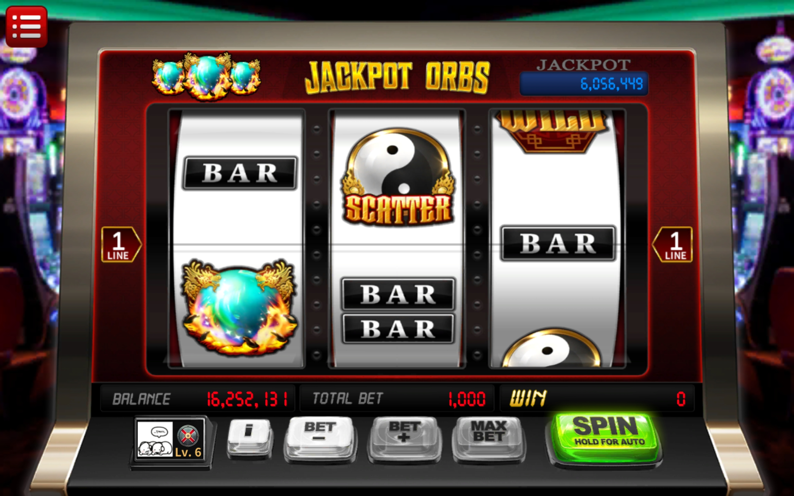
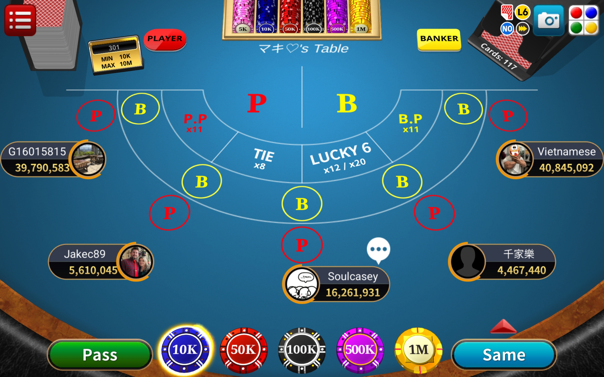

Dragon Ace Casino
 







Unity
C#
Socket.IO
UniRx
Node.js
Jenkins
Dragon Ace Casino is a cross-platform multiplayer mobile casino game developed at GameSpring that unifies multiple casino titles into a single application, achieving 1,000,000+ combined downloads.
Primary Contributions:
- Released new slot games including Fortune Treasure, Liberty Spins, and God of Wealth
- Refactored legacy code into a modern, object-oriented architecture
- Designed Socket.IO-based client/server network communication flows
- Optimized algorithmic logic, multi-object spawning, and high-vertex rendering
- Researched and integrated external libraries such as WebView and cheat detection
- Managed Jenkins based CI/CD pipeline
Notable Achievements:
- Reduced new game release cycle from 1.5 years to 4 months by refactoring core systems for scalability and establishing release guidelines
- Fully automated Jenkins DevOps pipeline, cutting monthly Xcode build failure rates from 30% to 0%
- Optimized slot engine network, reducing server bottlenecks and cutting packet size by 50%